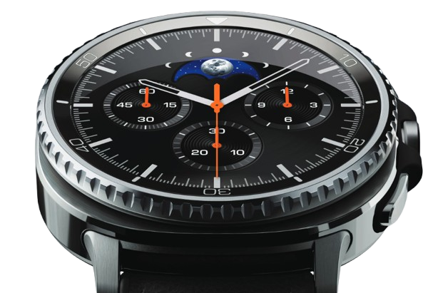

GALAXY WATCH8 CLASSIC
KHI ĐẲNG CẤP VÀ
PHONG ĐỘ SỐNG KHOẺ
SONG HÀNH TRÊN
CỔ TAY QUÝ ÔNG

Khí chất và bản lĩnh của một quý ông không tự nhiên mà xuất hiện. Đó là một hành trình tu dưỡng, vun bồi toàn diện từ trong ra ngoài. Thời gian luôn là chứng nhân cho nỗ lực của những người đàn ông thấu hiểu và yêu thương bản thân, luôn khát khao trở thành phiên bản tốt nhất.
Những chiếc đồng hồ luôn là hình ảnh trực quan nhất cho khái niệm thời gian. Với các quý ông hiện đại, đồng hồ vừa là tuyên ngôn khẳng định phong cách cá nhân, vừa là minh chứng cho hành trình rèn giũa nên phong thái của phái mạnh. Từ nền tảng này, Galaxy Watch8 Classic ra đời như một chiến hữu đắc lực, dành riêng cho những quý ông đề cao phong cách, hiệu suất sống và trải nghiệm sức khoẻ được cá nhân hoá.
“Chúng tôi cam kết trao quyền cho hàng tỷ người để sống cuộc sống khỏe mạnh hơn thông qua công nghệ sáng tạo của mình”, ông TM Roh, Chủ tịch kiêm Trưởng bộ phận Trải nghiệm thiết bị (DX) tại Samsung Electronics tự hào chia sẻ. Đây là khởi đầu cho một tương lai mới, nơi AI và các cảm biến tân tiến trên đồng hồ thông minh dẫn lối cho hành trình kiến tạo một cuộc sống khỏe mạnh hơn, thời thượng hơn của mọi người dùng, đặc biệt là các quý ông hiện đại.
PHONG THÁI LỊCH LÃM, TINH HOA GÓI TRỌN TRÊN CỔ TAY
Đón đầu xu hướng thẩm mỹ tối giản, Galaxy Watch8 Classic mang đến cho phái mạnh một thiết kế tinh gọn nhưng không kém phần cao cấp, lịch lãm. Thiết kế đệm với mặt đồng hồ tròn cùng viền đệm vuông bên ngoài, từng rất nổi tiếng trên Galaxy Watch Ultra và các dòng đồng hồ xa xỉ được tái hiện hoàn hảo trên Galaxy Watch8 Classic. Tuy nhiên, các cấu trúc bên trong đồng hồ đã được thiết kế lại để tối ưu khả năng lắp ráp linh kiện, giúp thiết bị mỏng hơn đến 11%. Thiết kế giữ trọn bản sắc cổ điển cao cấp, kết hợp cùng hệ thống Dynamic Lug giúp đồng hồ chuyển động tự nhiên theo cổ tay, mang lại sự thoải mái và chính xác hơn trong quá trình theo dõi sức khoẻ. Giờ đây, các quý ông đã có thể tự tin diện vest tới những sự kiện lớn hay thoải mái xuống phố với một chiếc đồng hồ thanh thoát và lịch lãm trên cổ tay
Ngôn ngữ thiết kế sang trọng, nam tính thể hiện rõ nét trong từng tiểu tiết trên đồng hồ. Từ dây đeo cao cấp, vòng xoay bezel với răng cưa mạnh mẽ đến nút bấm kích hoạt nhanh... đều góp phần khắc hoạ vẻ đẹp tinh tế vượt thời gian cho Galaxy Watch8 Classic. Mẫu đồng hồ này có kích thước 46mm, vừa vặn với cổ tay nam giới cùng hai màu Đen, Trắng dễ phối đồ. Thiết kế này phù hợp với nhiều phong cách thời trang, độ tuổi và tính cách của từng quý ông khác nhau.
Được sinh ra để đồng hành cùng nhịp sống năng động, hiện đại của nam giới, Galaxy Watch8 Classic cũng sở hữu độ sáng tối đa lên đến 3000 nits, GPS kép, vi xử lý 3nm mạnh mẽ và thời lượng pin vượt trội. Tất cả đảm bảo đồng hồ có thể hoạt động mạnh mẽ, bền bỉ, theo kịp lối sống hiệu suất cao.
HIỂU BẢN THÂN,
YÊU SỨC KHOẺ
TỪ TRONG RA NGOÀI
Đàn ông hiện đại không chỉ quyết liệt trong sự nghiệp mà còn quan tâm nhiều đến sức khoẻ, diện mạo, vóc dáng. Với các quý ông, việc yêu thương bản thân đúng cách, tập luyện, nghỉ ngơi và dinh dưỡng hợp lý cũng là cách họ tận hưởng cuộc sống. Galaxy Watch8 Classic chứng tỏ sự vượt trội khi gói trọn cả hệ sinh thái chăm sóc sức khoẻ trên cổ tay nam giới, giúp các quý ông sống chất, sống trọn từng phút giây.
Giấc ngủ được xem là “thần dược” phục hồi thể chất và tinh thần sau một ngày hoạt động hết công suất. Tuy nhiên, những đêm thức khuya xem bóng đá hay đi nhậu cùng bạn bè có thể ảnh hưởng không nhỏ đến chất lượng giấc ngủ. Galaxy Watch8 Classic sẽ giúp người dùng nghỉ ngơi tốt hơn với loạt tính năng cấp tiến như Bed- time Guidance (Hướng dẫn giờ đi ngủ) và Vascular Load (Tải trọng mạch máu) cho Galaxy Watch8 Classic. Bằng cách phân tích chu kỳ giấc ngủ của 3 ngày gần nhất, tính năng Bedtime Guidance sẽ đo nhịp sinh học và nhu cầu giấc ngủ của người dùng để gợi ý thời gian ngủ tối ưu. Việc thiết lập giờ đi ngủ và thức giấc đều đặn sẽ tối ưu nhịp sinh học, giúp các quý ông dễ đi vào giấc ngủ và thức dậy sảng khoái vào hôm sau. Tính năng này rất phù hợp với những người đang cố gắng cải thiện giấc ngủ sau một thời gian ngủ không đều, mang lại lợi ích rõ rệt cho sức khoẻ.
Ngay trong khi ngủ, Galaxy Watch8 Classic với tính năng Vascular Load vẫn đánh giá mức độ căng thẳng trên hệ thống mạch máu của người dùng. Trong trạng thái tự nhiên, áp lực lên hệ mạch có xu hướng giảm. Tuy nhiên nếu có biến động quá mức, đó có thể là dấu hiệu tiềm ẩn về sức khỏe tim mạch. Ở trường hợp này, Vascular Load không chỉ đưa ra cảnh báo kịp thời mà còn bổ sung thêm các yếu tố liên quan như giấc ngủ, vận động và căng thẳng. Tất cả góp phần hỗ trợ người dùng duy trì một lối sống lành mạnh, hình thành các thói quen tích cực.
Với nhu cầu tập luyện thể chất, nâng cao sức bền và cải thiện vóc dáng, Galaxy Watch8 Classic đóng vai trò như một huấn luyện viên cá nhân dày dặn kinh nghiệm cho các quý ông. Thấu hiểu người dùng mới bắt đầu chạy bộ thường gặp chấn thương do luyện tập quá sức hoặc tập chưa đủ, Samsung đã phát triển tính năng Running Coach trên đồng hồ thông minh mới. Chỉ cần đeo Galaxy Watch8 Classic và chạy trong 12 phút, các quý ông sẽ nhận được phân tích hiệu suất và đánh giá cấp độ chạy của mình trên thang điểm từ 1 đến 10. Dựa trên kết quả này, đồng hồ sẽ đề ra một kế hoạch luyện tập chi tiết với các cự ly 5.000m, 10.000m, bán marathon hoặc marathon toàn phần. Sau mỗi buổi tập, người dùng sẽ được nâng cấp và mở khoá những thử thách chạy tiếp theo. Ngoài ra, các quý ông cũng có thể thách thức bạn bè và gia đình cùng rèn luyện sức khỏe với mình thông qua tính năng Together.

Vượt khỏi giới hạn của một chiếc đồng hồ thông minh, Galaxy Watch8 Classic đang góp phần cùng người dùng xây dựng phong cách sống mới, hun đúc nên phong thái quý ông lịch lãm trong từng khoảnh khắc. Đây được xem là tuyên ngôn sống đỉnh cao, toàn diện của người đàn ông thành đạt thời đại mới.
DIỆN MẠO TRẺ TRUNG,
NÓI KHÔNG VỚI STRESS
Duy trì diện mạo trẻ trung và khỏe mạnh theo thời gian là một mong mỏi của rất nhiều quý ông hiện đại. Để làm được điều này, nam giới phải kiểm soát hiệu quả căng thẳng cũng như chống oxy hoá toàn diện thông qua dinh dưỡng. Galaxy Watch8 Classic thể hiện tiềm năng vượt trội khi cung cấp tính năng Mindfulness Tracker, cho phép ghi lại tâm trạng và nhận hướng dẫn về các bài tập thở để giải tỏa căng thẳng. Ngay khi phát hiện mức độ căng thẳng cao, đồng hồ sẽ đưa ra cảnh báo theo thời gian thực để người dùng kịp nghỉ ngơi, ổn định tinh thần.
Lối sống hiện đại với thói quen uống rượu, hút thuốc, tiếp xúc với tia UV, căng thẳng hay thiếu ngủ... có thể đẩy nhanh tốc độ lão hoá do làm tăng các gốc tự do trong cơ thể. Tất cả được biểu hiện sớm nhất ngay trên làn da. Do đó, các quý ông hiện đại luôn dành sự quan tâm đặc biệt cho sức khỏe làn da, không chỉ giúp ghi điểm về ngoại hình mà kéo dài sự trẻ trung theo năm tháng. Galaxy Watch8 Classic lần đầu tiên giới thiệu tính năng Antioxidant Index (Chỉ số chống oxy hóa) trên đồng hồ thông minh, hướng dẫn người dùng theo đuổi lối sống tích cực để giữ mãi vẻ thanh xuân. Tính năng này cho phép đồng hồ đo được hàm lượng carotenoid (một loại chất chống oxy hóa có nhiều trong các loại rau củ và trái cây màu xanh lá cây/cam, được lưu trữ trong da) chỉ trong 5 giây, dựa vào cảm biến BioActive tiên tiến kích hoạt bằng ánh sáng.
Chỉ số Antioxidant Index phản ánh những thay đổi tích cực trong cơ thể và hành vi của bạn. Chẳng hạn, sau một thời gian duy trì thói quen uống nước ép cà rốt, các quý ông có thể thấy chỉ số chống oxy hóa được cải thiện, từ đó có động lực để duy trì lối sống khỏe mạnh hơn từng ngày. Vượt khỏi giới hạn của một chiếc đồng hồ thông minh, Galaxy Watch8 Classic đang góp phần cùng người dùng xây dựng phong cách sống mới, hun đúc nên phong thái quý ông lịch lãm trong từng khoảnh khắc. Đây được xem là tuyên ngôn sống đỉnh cao, toàn diện của người đàn ông thành đạt thời đại mới.
TỐI GIẢN ĐỂ TỐI ƯU,
CÁNH TAY ĐẮC LỰC AI
LUÔN SẴN SÀNG
Đàn ông chuộng sự đơn giản, tiện lợi. Galaxy Watch8 Classic thoả mãn tâm lý này thông qua sự gọn nhẹ trong thiết kế, mang đến sự thoải mái tuyệt đối khi đeo lâu hoặc vận động liên tục. Người dùng cũng sẽ có được trải nghiệm trực quan, dễ thao tác thông qua One UI 8 Watch mới. Giao diện người dùng được tối ưu hóa cho kích thước và hình dạng của mặt đồng hồ. Các ô thông tin đa năng mới giúp dễ dàng truy cập vào các số liệu sức khỏe, thời tiết, sự kiện... chỉ trong một lần xem nhanh. Đặc biệt, giao diện Now Bar mới sẽ đảm bảo các hoạt động chính luôn được chú ý mỗi lần xem cổ tay.
Galaxy AI đóng vai trò như cánh tay phải hỗ trợ mọi tác vụ của người dùng. Đơn giản, nhanh chóng, không cần chờ đợi là trải nghiệm tuyệt vời mà trí tuệ nhân tạo mang đến cho cánh mày râu. Người dùng có thể sử dụng các câu thoại tự nhiên để điều khiển đồng hồ mà không cần đến phím bấm vật lý. Chẳng hạn khi sẵn sàng bước vào buổi tập, bạn chỉ cần nói “Bắt đầu vòng tập 300 calo” hoặc “Đặt lịch chạy 20 phút” là đồng hồ đã sẵn sàng khởi chạy bài tập liền mạch trong Samsung Health. Vượt khỏi giới hạn của một chiếc đồng hồ thông minh, Galaxy Watch8 Classic đang góp phần cùng người dùng xây dựng phong cách sống mới, hun đúc nên phong thái quý ông lịch lãm trong từng khoảnh khắc. Đây được xem là tuyên ngôn sống đỉnh cao, toàn diện của người đàn ông thành đạt thời đại mới.